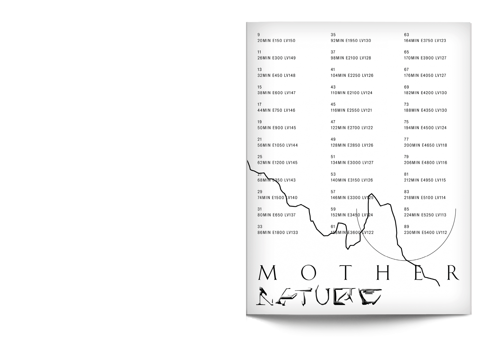
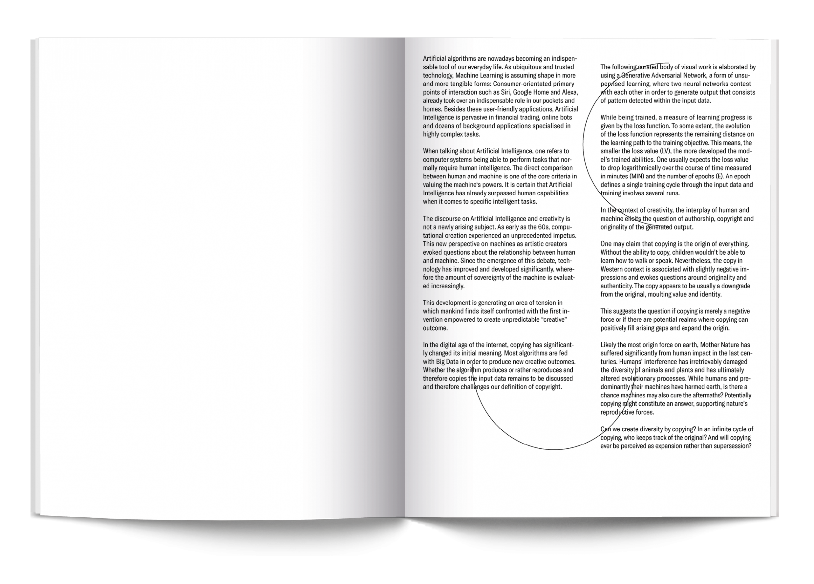
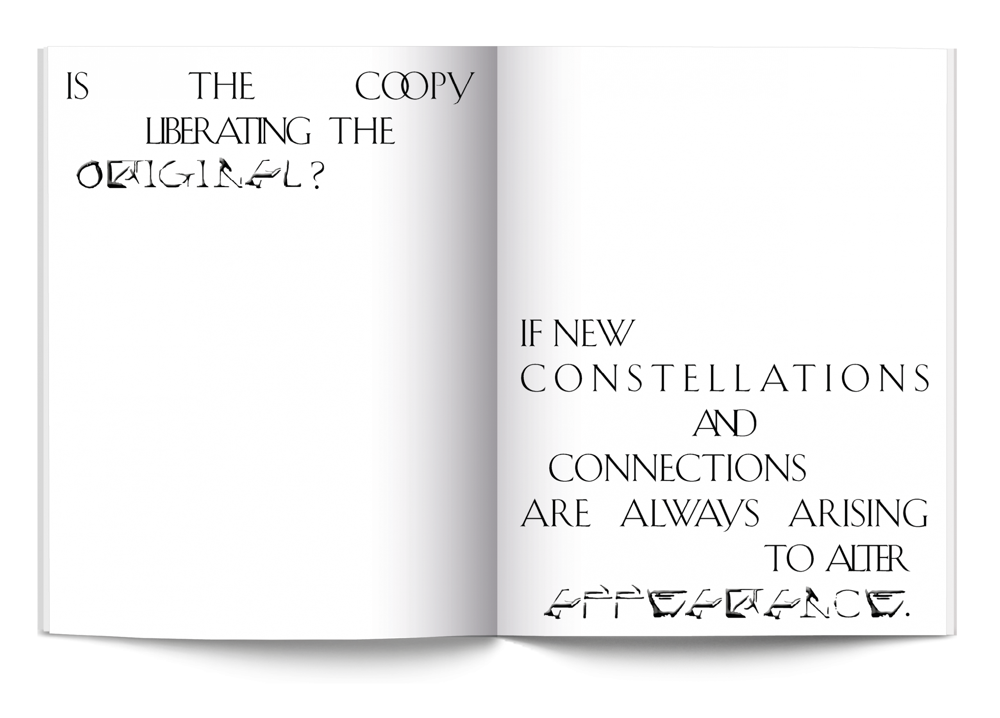
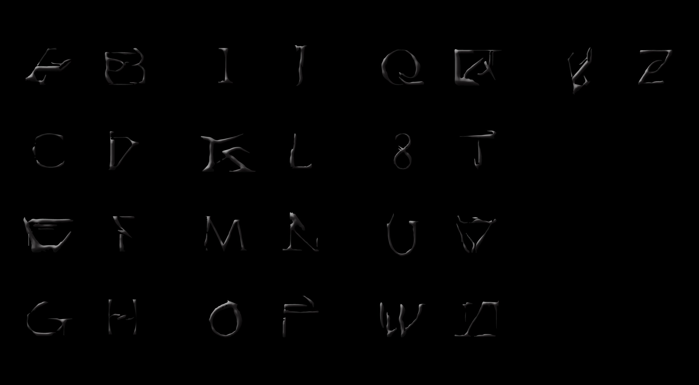
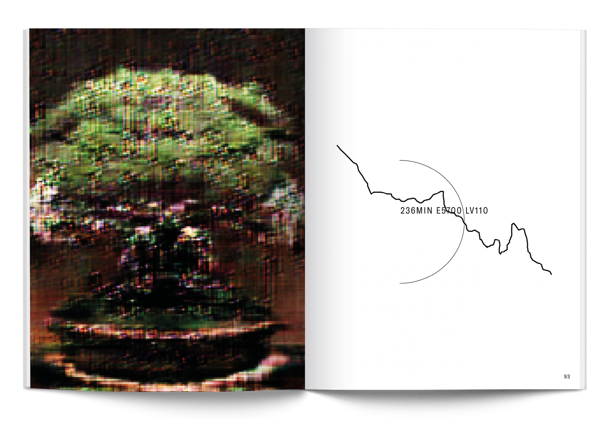
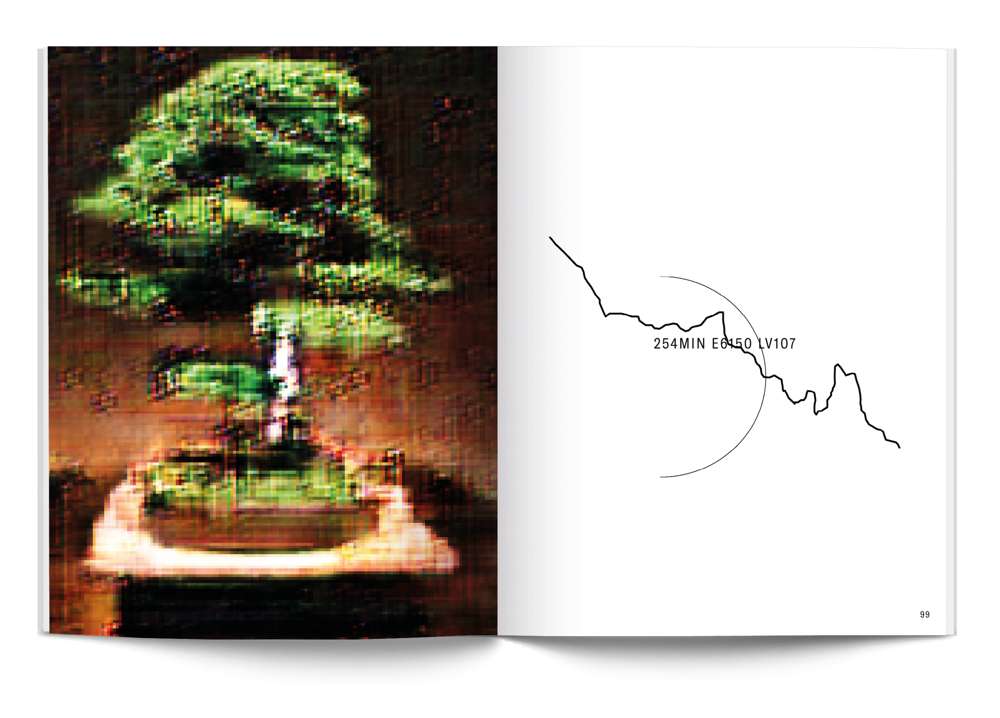
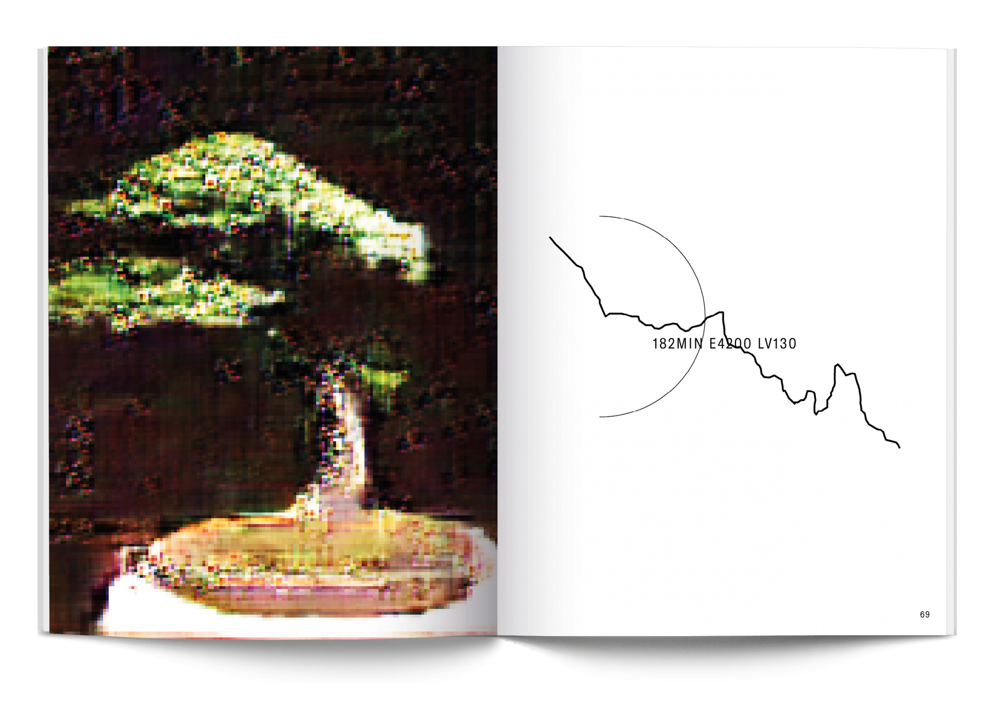

- 
- 
- 


- 
- 
- 
- 
Artificial Intelligence is an emerging force mastering our digital existence.
Creativity poses the most powerful resource in the 21st century. Copying is
the origin of everything, liberating from its ascetic embodiment. The emergence
of AI rendered distinction between original and copy largely obsolete.
A new instance of Artificial Creativity is initiating a new era of the copy by
“sampling” input data and creating new speculations about continuation.
Mother Nature elaborates this process by demystifying the key phases of
Artificial Creativity. Using the metaphor of nature in the form of bonsai trees,
the work unveils new perspectives and understandings of the concept of
the copy. Bonsai trees are a cultivated modification of nature and merely
mimic the shape and scale of the original trees. Through interminable mutations
and human interference, a new species is being created from which
the original (the tree) is hardly discernible. Nature’s procedure of evolution
and circular growth is hereby conspicuously equivalent to the learning process
AI is performing.
↗mother-nature.org